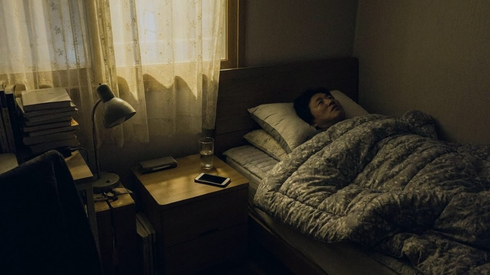
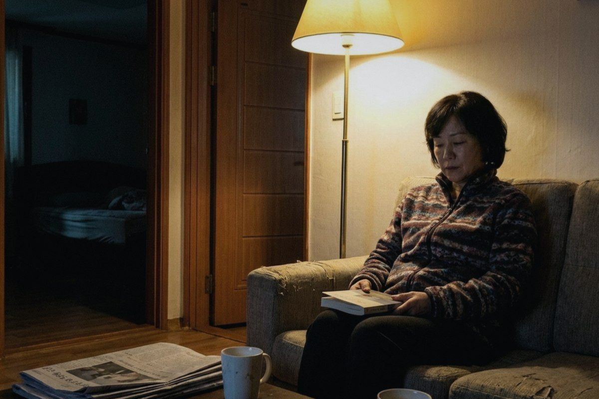
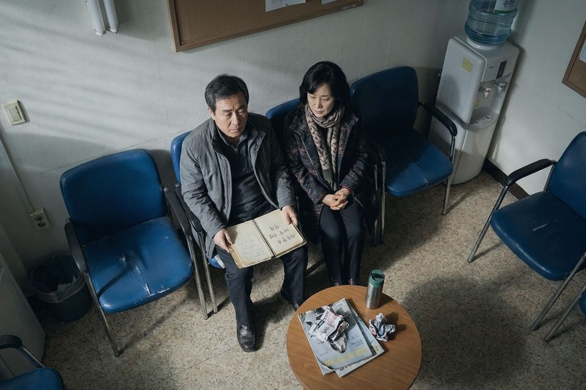

잠들기 어렵거나 새벽에 자꾸 깨서 '이게 불면증인가' 싶을 때 볼 기준이에요. 누워서 10분 넘게 잠이 안 오면 침대 밖으로 나오세요. 이런 밤이 1개월 이상 이어지고 낮 생활까지 힘들면 진료를 받아 보세요.

불면증은 잠들기 어렵거나(입면 장애) 자는 도중 자주 깨거나 너무 일찍 깨는(수면유지 장애) 상태예요. 질병관리청 국가건강정보포털은 이런 어려움이 1개월 이상 이어지고 낮 피로로 일상생활이 힘들 때 불면증으로 진단한다고 안내해요.
하루 이틀 못 잔 건 불면증이 아니에요. 서울아산병원에 따르면 스트레스가 분명하고 곧 해결될 상황이라면 특별한 치료 없이 대부분 자연스럽게 나아져요.
| 구분 | 기간 기준 | 참고 |
|---|---|---|
| 일시적 불면 | 며칠 | 원인이 풀리면 대부분 회복 |
| 불면증 | 1개월 이상 + 낮 생활 지장 | 국가건강정보포털 |
| 만성 불면장애 | 3개월 이상 | 서울대병원(DSM-5 기준) |
잠이 안 오는데 계속 누워 있으면 침대가 '잠 못 자는 곳'으로 몸에 익어요. 세브란스병원 자료를 보면 만성 불면증 환자의 수면일기에서 실제 잠은 3~4시간인데 누워 있는 시간은 7~8시간인 경우가 매우 많았어요.
국가건강정보포털이 권하는 순서는 이래요.
10분은 시계로 재기보다 '한참 뒤척였다' 싶을 때로 잡으면 돼요. 못 잔 잠을 채우려고 일찍 눕는 습관은 서울아산병원이 불면을 만성으로 끌고 가는 방법으로 꼽아요.

기관마다 숫자는 조금씩 다르지만 방향은 같아요.
저녁 과식이 잦다면 식후 더부룩함·소화불량, 먼저 바꿀 식사 습관 5가지와 병원 갈 신호도 함께 보세요.
먹는 약 때문에 잠을 설치는 경우는 습관만으로 풀리지 않아요. 서울아산병원은 갑상선 치료제, 항우울제, 항경련제 등을 불면을 일으킬 수 있는 약으로 꼽아요. 임의로 끊지 말고 처방한 의사와 먼저 상의하세요.
술은 잠드는 데만 잠깐 도움이 되고 잠의 질은 떨어뜨려요. 국가정신건강정보포털은 술이 깊은 잠을 줄이고 탈수와 이뇨 작용으로 자주 깨게 만든다고 설명해요. 술과 수면제를 함께 먹으면 부작용 위험도 크게 늘어요. 수면제가 필요한지는 의사가 판단할 몫이에요.
아래 중 하나라도 해당하면 가까운 병원이나 의원에서 상담을 받아 보세요.
국가건강정보포털은 수면무호흡증을 수면다원검사로 확진한다고 안내해요. 자는 동안 본인은 모르니 가족에게 숨이 멎는지 봐 달라고 하세요. 진료 전에는 잠자리에 든 시간, 깬 횟수, 일어난 시간, 낮잠을 적은 수면일기가 도움이 돼요.
손목 저림 때문에 밤에 깬다면 손목 통증·저림에 밤마다 깬다면: 집안일 뒤 병원 갈 신호 6가지를 먼저 확인해 보세요.
잠 문제와 함께 극단적인 생각이 든다면 기다리지 말고 24시간 운영하는 자살예방 상담전화 109에 바로 연락하세요.

| 상황 | 할 일 |
|---|---|
| 누워서 10분 넘게 잠이 안 옴 | 침대 밖에 있다가 졸리면 다시 눕기 |
| 늦게 잠든 다음 날 | 기상 시각은 그대로 |
| 잠 안 와서 술 한 잔 | 피하기 |
| 1개월 이상 + 낮 생활 지장 | 병원 진료 |
| 코골이 + 숨 멈춤 | 수면무호흡증 검사 상담 |
| 극단적인 생각 | 109 즉시 연락 |
Q. 주말에 늦잠으로 몰아 자도 되나요?
A. 국가정신건강정보포털과 국가암정보센터는 전날 늦게 잤더라도 아침에 일어나는 시각을 일정하게 지키라고 권해요.
이번 주에는 기상 시각 하나만 정해 매일 지켜 보세요.
2026년 11월 기준, 질병관리청·국가정신건강정보포털·보건복지부·대학병원 공식 자료 확인